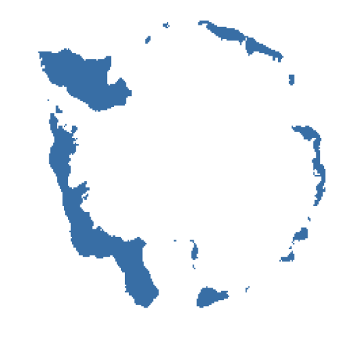
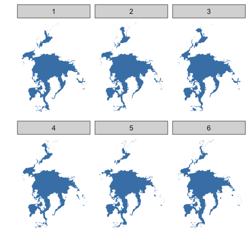

Sea ice vignette
Scott Chamberlain
2020-07-27
Source:vignettes/seaice_vignette.Rmd
seaice_vignette.RmdGet sea ice data at ftp://sidads.colorado.edu/DATASETS/NOAA/G02135/shapefiles
Look at data for a series of years for Feb, South pole
res <- sapply(seq(1986, 1990, 1), function(x)
sea_ice(x, month = 'Feb', pole = 'S'))
lapply(res, head)
#> [[1]]
#> long lat order hole piece id group
#> 1 -125000 2250000 1 FALSE 1 0 0.1
#> 2 -100000 2250000 2 FALSE 1 0 0.1
#> 3 -100000 2200000 3 FALSE 1 0 0.1
#> 4 -125000 2200000 4 FALSE 1 0 0.1
#> 5 -125000 2175000 5 FALSE 1 0 0.1
#> 6 -100000 2175000 6 FALSE 1 0 0.1
#>
#> [[2]]
#> long lat order hole piece id group
#> 1 -100000 2275000 1 FALSE 1 0 0.1
#> 2 -50000 2275000 2 FALSE 1 0 0.1
#> 3 -50000 2200000 3 FALSE 1 0 0.1
#> 4 -75000 2200000 4 FALSE 1 0 0.1
#> 5 -75000 2175000 5 FALSE 1 0 0.1
#> 6 -100000 2175000 6 FALSE 1 0 0.1
#>
#> [[3]]
#> long lat order hole piece id group
#> 1 -2300000 3475000 1 FALSE 1 0 0.1
#> 2 -2225000 3475000 2 FALSE 1 0 0.1
#> 3 -2225000 3400000 3 FALSE 1 0 0.1
#> 4 -2250000 3400000 4 FALSE 1 0 0.1
#> 5 -2250000 3425000 5 FALSE 1 0 0.1
#> 6 -2300000 3425000 6 FALSE 1 0 0.1
#>
#> [[4]]
#> long lat order hole piece id group
#> 1 1225000 2025000 1 FALSE 1 0 0.1
#> 2 1250000 2025000 2 FALSE 1 0 0.1
#> 3 1250000 2000000 3 FALSE 1 0 0.1
#> 4 1275000 2000000 4 FALSE 1 0 0.1
#> 5 1275000 1975000 5 FALSE 1 0 0.1
#> 6 1350000 1975000 6 FALSE 1 0 0.1
#>
#> [[5]]
#> long lat order hole piece id group
#> 1 -150000 2250000 1 FALSE 1 0 0.1
#> 2 -125000 2250000 2 FALSE 1 0 0.1
#> 3 -125000 2225000 3 FALSE 1 0 0.1
#> 4 -150000 2225000 4 FALSE 1 0 0.1
#> 5 -150000 2250000 5 FALSE 1 0 0.1
#> 6 475000 2375000 1 FALSE 1 1 1.1Map a single year/month/pole combo
ggplot(res[[1]], aes(long, lat, group=group)) +
geom_polygon(fill="steelblue") +
theme_ice()

plot of chunk seaice1
Map all years for April only for North pole
dat <- sea_ice(year = 1985:1990, month = 'Apr', pole = 'N')
df <- bind_rows(dat, .id = "x")
ggplot(df, aes(long, lat, group = group)) +
geom_polygon(fill = "steelblue") +
theme_ice() +
facet_wrap(~ x)

plot of chunk seaice2